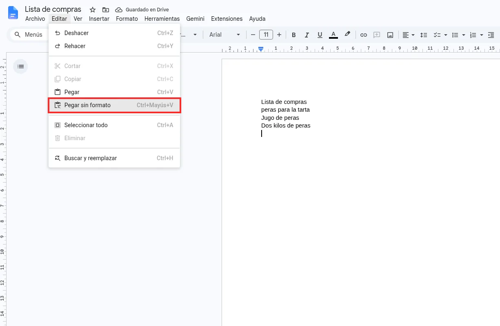
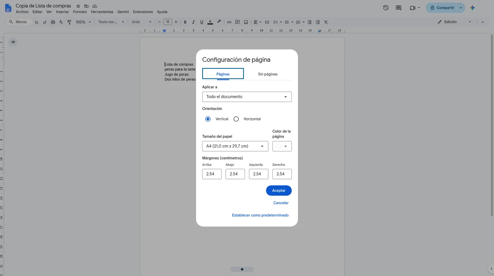
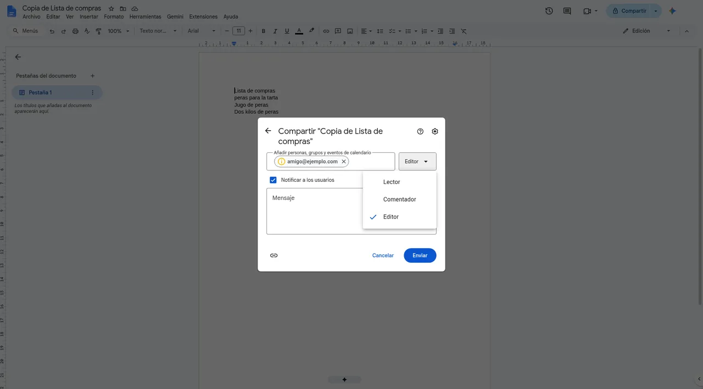
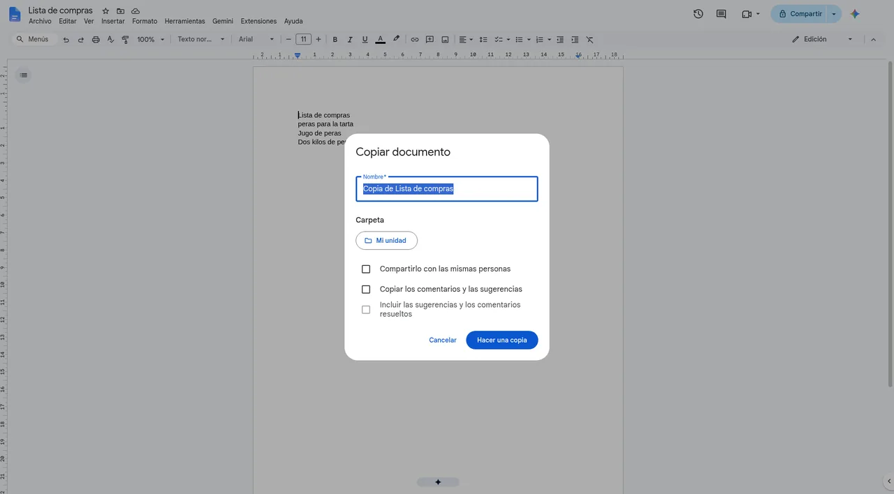
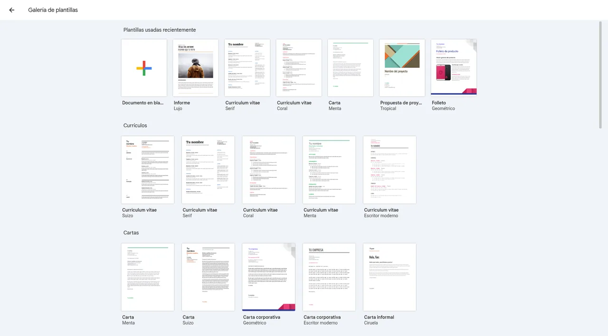

Lecciones
Lecciones paso a paso
Cada lección explica en texto y con capturas reales lo que muestra el Short. Las que todavía no salieron aparecen como «próximamente» en el curso.

Lección 11 · 26/11/2026
¿Pegaste un texto y te cambió la letra? Con Editar → Deshacer (Ctrl + Z) volvés atrás, con Rehacer (Ctrl + Y) recuperás el cambio y con Pegar sin form…

Lección 10 · 25/11/2026
¿Tenés que explicar un Google Doc? Con Archivo → Grabar vídeo grabás tu pantalla, tu cámara o solo tu voz sin salir del documento: se abre el estudio …

Lección 9 · 25/11/2026
¿Tu Google Doc sale cortado al imprimir? Con Archivo → Configuración de página elegís orientación, tamaño del papel y márgenes, y después lo imprimís …

Lección 8 · 24/11/2026
¿Te quedaste sin Internet? En Google Docs: Archivo → Activar acceso sin conexión. Después, con el ícono de la nube podés ver si el documento quedó lis…

Lección 7 · 24/11/2026
¿Borraste algo sin querer? En Google Docs: Archivo → Historial de versiones. Poné un nombre a la versión actual, mirá el historial y restaurá una vers…

Lección 5 · 23/11/2026
¿Querés mandar tu documento por correo sin salir de Google Docs? Archivo → Correo electrónico → Enviar este archivo por correo. Elegí PDF o Word y toc…

Lección 4 · 23/11/2026
¿Querés que otra persona vea o edite tu documento? En Google Docs: Archivo → Compartir → Compartir con otros. Elegí el rol (Lector, Comentador o Edito…

Lección 3 · 22/11/2026
¿Querés duplicar, mover o borrar un documento? En Google Docs todo está en el menú Archivo: Hacer una copia, Mover, Añadir acceso directo a Drive y Mo…

Lección 2 · 22/11/2026
¿Vas a empezar un documento en blanco? En Google Docs no hace falta arrancar de cero: usá una plantilla de la galería o pedile a Gemini un primer borr…

Lección 42 · 20/11/2026
¿Querés saber cuántas palabras tiene tu documento? En Documentos de Google: Herramientas → Contar palabras. Ves páginas, palabras y caracteres, y podé…

Lección 6 · 20/11/2026
¿Necesitás tu documento en PDF? En Documentos de Google: Archivo → Descargar → Documento PDF (.pdf). Se guarda en tu equipo en segundos.…

Lección 32 · 19/11/2026
¿Tu texto se ve todo igual? En Documentos de Google seleccioná el texto, tocá la B para la negrita, elegí el Tamaño de fuente y cambiá el color con la…

Lección 12 · 19/11/2026
¿Escribiste la misma palabra muchas veces? Cambiala de una sola vez en Documentos de Google: Editar → Buscar y reemplazar (Ctrl + H), escribí la palab…

Lección 1 · 18/11/2026
¿Necesitás escribir algo y no tenés Word? Creá un documento gratis en Documentos de Google en 3 pasos: entrá a docs.google.com, tocá Documento en blan…